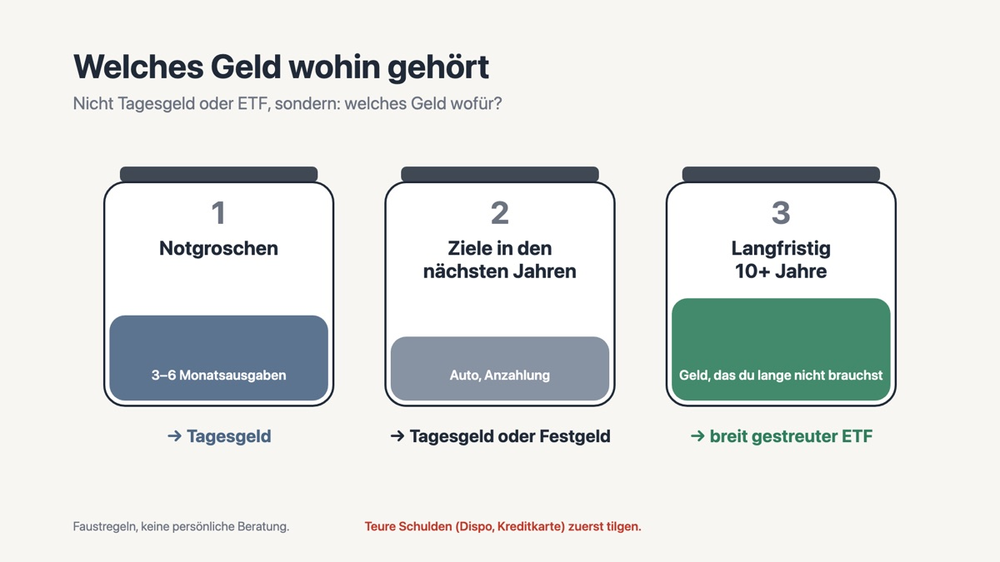
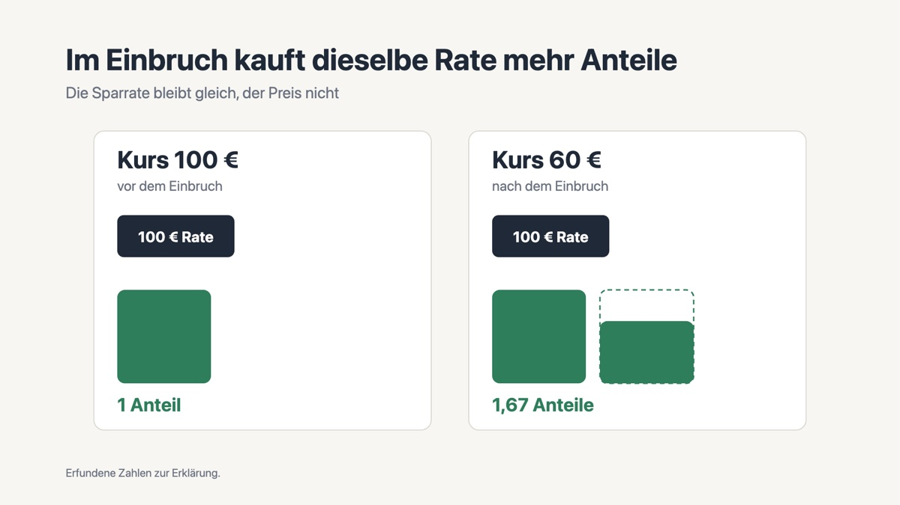
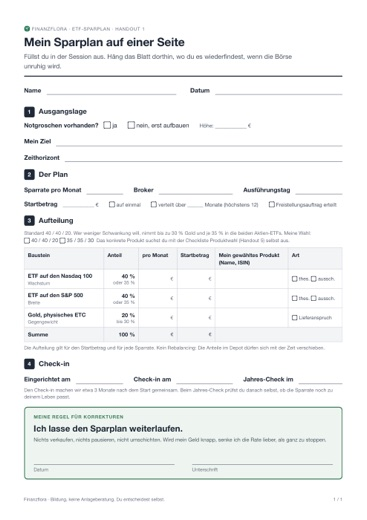
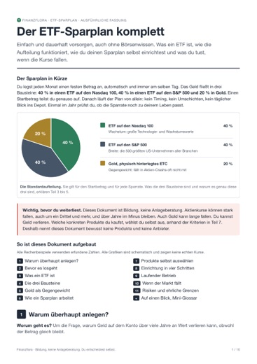
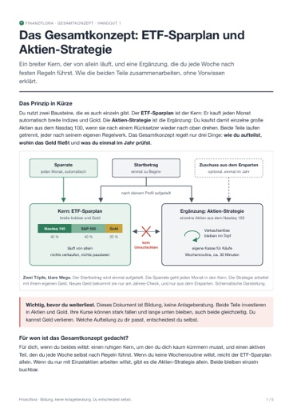
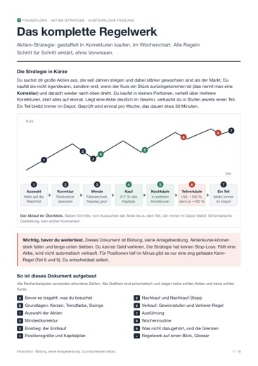

Vermögen wachsen lassen.
Ruhig und mit Plan.
Dein Geld liegt auf dem Konto, und du hast dich bisher nicht getraut? Ich begleite dich 1:1, bis dein Plan steht. Ohne Börsenwissen vorab, ohne Produktverkauf. Am Ende verstehst du, was du tust, und entscheidest selbst.
Kennenlerngespräch buchen30 Minuten per Video. Die Preise stehen unten auf dieser Seite. Im Gespräch wird nichts verkauft, du entscheidest danach in Ruhe.
Für wen das gedacht ist
- Du hast Geld auf dem Giro- oder Tagesgeldkonto: gespart, geerbt oder frei, seit der letzte Kredit abbezahlt ist.
- Du hast es lange aufgeschoben. Das geht sehr vielen so, auch mit 50 kannst du noch anfangen, wenn du das Geld zehn Jahre oder länger nicht brauchst.
- Du willst verstehen und selbst entscheiden, statt einem Tipp oder einem Berater hinterherzulaufen.
- Du suchst jemanden, der ehrlich auch die Nachteile nennt.
- Gern auch zu zweit: mit Partnerin oder Partner, oder mit Sohn oder Tochter am Bildschirm dabei.
So gehen wir vor


Grafiken aus meinen Videos auf YouTube.
Welcher Weg passt zu dir?
Eine Frage vorab: Willst du dich jede Woche etwa 30 Minuten selbst um einzelne Aktien kümmern?
Dein Geld vom Konto in einen Plan
Ein breit gestreuter ETF-Plan, der ruhig läuft: für das Geld, das schon da ist, und für das, was jeden Monat dazukommt.
- Session 1 (90 Minuten): Ausgangslage, Notgroschen, Startbetrag, Sparrate, Aufteilung. Du richtest den Plan bei deinem Broker ein, ich bin dabei.
- Neu ab 2027: Wir klären, ob das Altersvorsorgedepot zu dir passt. Wenn ja, richtest du es ab Januar 2027 ein, ich bin dabei.
- Session 2 nach etwa drei Monaten (30 bis 45 Minuten): Check und deine Fragen, auch: was tun, wenn der Markt fällt.
- Material: dein Plan auf einer Seite, Checkliste für die Produktwahl, Steuer-Basics, Rechner.
Nicht für dich, wenn du das Geld in den nächsten zehn Jahren brauchst oder noch teure Schulden hast. Das klären wir zuerst.
ETF-Plan als Kern, Aktien als Ergänzung
Der ETF-Plan trägt das Fundament, die Aktien-Strategie kommt dazu, in der Aufteilung, die zu dir passt.
- Alles aus beiden Angeboten, auch das Altersvorsorgedepot.
- Dazu: wie beide Teile zusammenspielen, wohin neues Geld fließt, und ein Jahres-Check zum Ausfüllen.
Für dich, wenn du Schwankungen aushältst und dir jede Woche eine halbe Stunde nimmst. Nicht für dich, wenn ein Minus im Depot dich nachts wach hält.
Aktien-Strategie 1:1
Einzelaktien nach festen Regeln kaufen, nachkaufen und verkaufen, mit etwa 30 Minuten pro Woche. Regeln statt Bauchgefühl.
- Vier Sessions über vier bis sechs Wochen: Setup und Kapitalplan, Kandidaten prüfen, erster Einstieg nach den Regeln, Review deiner Routine.
- Du bringst die Kandidaten mit und entscheidest selbst, ich prüfe mit dir, ob die Regeln richtig angewendet sind.
- Material: das komplette Regelwerk, Checklisten, Wochenroutine, Rechner, zwei kostenlose Indikatoren auf TradingView.
- Startkapital: ab 5.000 €, empfohlen 10.000 € oder mehr.
Nicht für dich, wenn du noch keine breit gestreute Basis hast. Dann ist Kern plus Aktien der bessere Start.
Du kannst klein anfangen. Wer mit dem ETF-Plan startet und später die Aktien-Strategie dazunimmt, bekommt den ETF-Preis auf Kern plus Aktien angerechnet.
Zufriedenheitsgarantie. Wenn du nach der ersten Session das Gefühl hast, es hat sich nicht gelohnt, sag mir innerhalb von 7 Tagen Bescheid, und du bekommst den vollen Preis zurück. Ohne Begründung, für alle drei Angebote.
Alle Preise sind Endpreise. Gemäß § 19 UStG wird keine Umsatzsteuer berechnet.
So läuft es ab
- Kennenlerngespräch, 30 Minuten per Video. Es kostet nichts, und es wird nichts verkauft. Du erzählst, wo du stehst, ich sage dir ehrlich, welcher Weg passt, auch wenn das heißt, dass du erst etwas anderes regeln solltest oder mich gar nicht brauchst.
- Du entscheidest in Ruhe. Wenn du loslegen willst, schicke ich dir danach den Bezahllink und die Termine. Gezahlt wird nie im Gespräch.
- Sessions per Video. Wir arbeiten an deinem Bildschirm. Entscheidungen triffst du, ich erkläre und prüfe mit dir.
- Material zum Behalten. PDFs und Rechner, damit du später allein weitermachen kannst.
Das bekommst du zum Behalten




Dazu Checklisten und ein Rechner für Google Sheets oder Excel.
Was du von mir nicht bekommst
- Keine Empfehlung einzelner Produkte, Anbieter, Aktien oder Fonds. Du wählst nach klaren Kriterien selbst.
- Keine Verwaltung deines Depots und keine Käufe oder Verkäufe für dich.
- Keine Renditeversprechen. Aktien schwanken, Einbrüche gehören dazu.
- Kein Verkauf von Finanzprodukten, keine Provisionen.
- Kein Druck und keine Zahlung im Gespräch. Was es kostet, steht auf dieser Seite.
Das Angebot ist Bildung und Begleitung, keine Anlageberatung.
Wer dich begleitet

Ich bin Richard Pawletta. Die letzten Jahre habe ich ein Unternehmen mit aufgebaut, das Software für Trader entwickelt. Dort habe ich eng mit erfahrenen Tradern gearbeitet, und einer von ihnen hat mich über Jahre begleitet: Charts lesen, Regeln setzen und einhalten, und vor allem in schlechten Phasen ruhig bleiben.
Mein eigenes Depot habe ich klein angefangen und Schritt für Schritt aufgebaut. Dieses Wissen gebe ich weiter, so, dass du es ohne Vorwissen umsetzen kannst.
Auf YouTube erkläre ich die Grundlagen kostenlos: Finanzflora auf YouTube.
Häufige Fragen
Brauche ich Vorwissen?
Nein. Alles, was du brauchst, erkläre ich dir. Hilfreich ist, vorher ein, zwei Videos auf dem YouTube-Kanal zu schauen.
Bin ich mit 50 oder 60 nicht zu spät dran?
Entscheidend ist nicht dein Alter, sondern wie lange du das Geld nicht brauchst. Für ETFs und Aktien sollten es mindestens zehn Jahre sein. Was du früher brauchst, bleibt auf dem Tagesgeld. Genau diese Aufteilung klären wir in der ersten Session.
Wie viel Geld brauche ich?
Für den ETF-Plan reicht ein Startbetrag oder eine Sparrate, die du dauerhaft stemmen kannst. Vorher steht ein Notgroschen von drei bis sechs Monatsausgaben. Einen großen Startbetrag kannst du auch über bis zu zwölf Monate verteilen. Für die Aktien-Strategie solltest du mindestens 5.000 € haben, besser 10.000 € oder mehr, die du viele Jahre nicht brauchst.
Was ist mit dem neuen Altersvorsorgedepot?
Es startet am 1. Januar 2027. In der ETF-Begleitung schauen wir, ob es zu deiner Lage passt und wie es mit deinem übrigen Plan zusammenspielt. Wenn du dich dafür entscheidest, richtest du es ab Januar ein, ich bin dabei. Den Anbieter wählst du nach den Kriterien selbst.
Welchen Broker brauche ich?
Einen, bei dem du ein Depot hast oder eröffnest. Ich nenne keine bestimmten Anbieter, wir gehen die Kriterien gemeinsam durch, und du entscheidest.
Wie viel Zeit kostet das danach?
Ein ETF-Plan läuft von allein, einmal im Jahr ein kurzer Check. Die Aktien-Strategie braucht etwa 30 Minuten pro Woche nach Wochenschluss.
Was ist, wenn die Börse fällt?
Das gehört dazu, und genau dafür ist ein Plan da. Wie du dich in einem Einbruch verhältst, ist Teil beider Angebote.
Was, wenn es mir nichts bringt?
Dann bekommst du dein Geld zurück. Wenn du nach der ersten Session das Gefühl hast, es hat sich nicht gelohnt, sag mir innerhalb von 7 Tagen Bescheid, und du bekommst den vollen Preis zurück. Ohne Begründung, für alle drei Angebote. Das gilt zusätzlich zum gesetzlichen Widerrufsrecht.
Kann ich vom Vertrag zurücktreten?
Ja, du hast ein gesetzliches Widerrufsrecht von 14 Tagen. Details findest du in der Widerrufsbelehrung.
Lass uns sprechen
30 Minuten per Video. Ohne Kosten, ohne Verkauf im Gespräch.
Kennenlerngespräch buchenLieber schreiben? richardpawletta@gmail.com